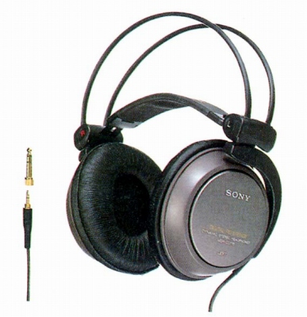

MDR-CD770

■価格 11,000円■型式 密閉ダイナミック型■振動板 50�oドーム型■インピーダンス 32Ω■再生周波数帯域 5-30,000Hz■許容入力 1,000mW■感度 106ｄB/mW■コード 3.5ｍ LC-OFCリッツ線 ステレオ2ウェイプラグ■重量 320g（コード含まず）■発売 1996年6月■販売終了 2000年頃■備考 高磁力ネオジウム（従来比30％up)採用
ソニーのインデックスへ